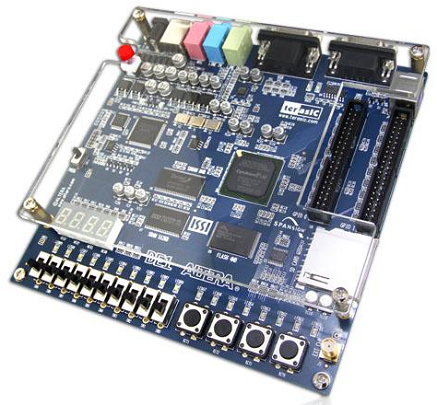
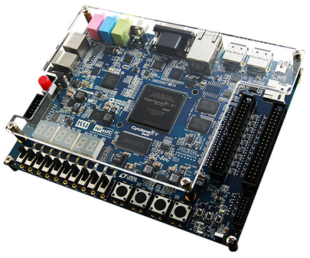
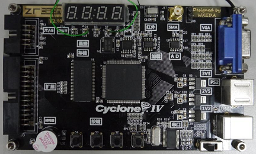
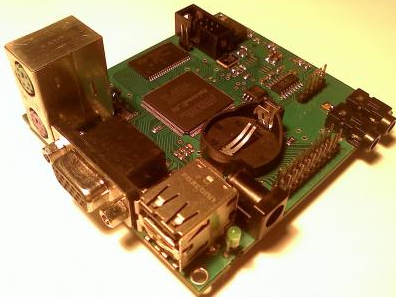
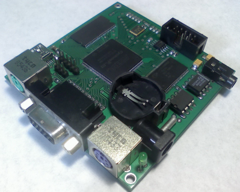

www.spetsialist-mx.ru
САЙТ О ПК "СПЕЦИАЛИСТ" И ЕГО КЛОНАХ
| |
|
| ГЛАВНАЯ | |
| МИКРОПРОЦЕССОР | |
| СИНХРОГЕНЕРАТОР | |
| ПАМЯТЬ | |
| ИНТЕРФЕЙС | |
| КЛОНЫ | |
| ПРОГРАММЫ | |
| ИГРЫ | |
| СПЕЦИАЛИСТ МХ | |
| ПЛИС | |
| ССЫЛКИ | |
| ОБРАТНАЯ СВЯЗЬ |
Автор данного сайта решил собрать ПК "Специалист" (рабочее название "Специалист МХ_FPGA") на современных компонетах. С целью уменьшить количество микросхем решено было реализовать логические элементы, триггеры, счётчики, регистры на ПЛИС. Базируясь на данном опыте были портированны другими авторами ещё на две DevBoard.
ПОНЯТИЕ ПЛИС
Программируемая пользователем вентильная матрица (ППВМ, FPGA) - полупроводниковое устройство, которое может быть сконфигурировано производителем или разработчиком после изготовления; отсюда название: "программируемая пользователем". ППВМ программируются путём изменения логики работы принципиальной схемы, например, с помощью исходного кода на языке проектирования (типа VHDL), на котором можно описать эту логику работы микросхемы. ППВМ является одной из архитектурных разновидностей программируемых логических интегральных схем (ПЛИС).
Микросхемы FPGA фирмы Altera выпускаются по технологии SRAM, в процессе работы конфигурация FPGA, хранится в ячейках ОЗУ. Поскольку конфигурационное ОЗУ является энергозависимым, его необходимо загружать каждый раз после включения питания. В процессе разработки и отладки менять конфигурацию FPGA приходится часто, для этого, как правило, используют загрузку по JTAG - интерфейсу с помощью специальных аппаратных средств - загрузочных кабелей (в нашем случае программаторов ByteBlaster и USBBlaster).
РЕАЛИЗАЦИЯ ПК НА ПЛИС
_
Реализация на девбордах Zr-Tech от andykarpov (архив сайта) и U10 (ниже).Ниже размещенны фотографии данных DevBoard соответственно.
_
Реализация на девбордах U9 от MVV (архив сайта). Ниже размещенна фотография данной DevBoard.
